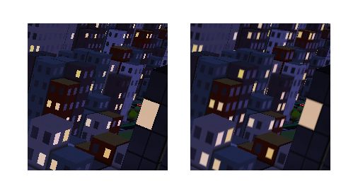

Breakdown and Process
Feb. 11, 2024
Grid City, a math and code based infinite 3D city, is an attempt at creating a fragment shader (graphics code informing the color of each pixel) that renders a cityscape in real time using a 3D rendering technique known as raymarching. I wrote this shader on Shadertoy.com, a site for creating and sharing this kind of code.
Creating a world like this using only a fragment shader often involves using signed distance functions, or SDFs, to define geometry, as opposed to the traditional polygonal meshes used in 3D graphics. In this shader, everything you see is defined by an SDF - 3D SDFs define the buildings, cars, trees, while 2D SDFs are used for the windows, street markings, and car lights, to name a few examples.
Grid City 2D
When I started this project, I knew I wanted to create a 3D city inspired by New York, but as is often the case with building in 3D, it was easier to start with two dimensions. The below video is from Grid City 2D, the shader I wrote as a preliminary sketch for the 3D version.
Domain Repetition
One amazing aspect of art created with graphics code is the infinite repeatability of space. If you play video games, you've probably noticed repeated textures tiled across surfaces. This is achieved by sampling the texture repeatedly, starting over each time we reach the end. We can use the same logic to repeat space in a shader like this, creating an infinite grid of 'cells' or 'tiles.' This technique is known as Domain Repetition, and can be applied to any number of dimensions.
In the linked article, Inigo Quilez says it best: it's a "mind blowing moment ... when one learns that with Domain Repetition a simple line of code can replicate an object infinite many times without requiring writing hundreds of lines of instancing infrastructure." What's particularly fascinating about Domain Repetition is not only that we can infinitely repeat a tile, we can also use the unique coordinates of each tile to change what appears in that tile.
Using 2D domain repetition to divide up the space and 2D SDFs (catalogued by Inigo Quilez) to draw shapes, Grid City 2D started to take shape. Each tile represents a block, with a variety of configurations of buildings, vehicles, and trees. Parks and lakes, which need to span multiple tiles, are shaped according to a function that checks the eight neighbors in a square around each tile, and creates geometry accordingly.

I also added elevated trains, which use domain repetition in only one dimension, and a helicopter (or UFO) that flies above the city once in a while. Everything else exists within the bounds of the 2D city grid.

Block, park, and lake states are all determined using a noise function, so they aren't purely random and instead form 'blobs' or clusters of like tiles. If you zoom out a little bit, you can see the clusters more clearly.

Wave Animation
A particularly challenging feature was the above wave animation - fading in and moving toward shore, while the tide rolls in and out. Because the lake tiles are formed by combining multiple sphere and rounded box SDF shapes, the waves had to be carefully programmed to follow the shape of the shoreline and line up perfectly where the shapes are combined.
Anti-Aliasing
Before moving on to the 3D Grid City shader, I want to touch on AA - anti-aliasing - in the 2D version. When I first published this shader, it was heavily aliased, because I was stepping from SDF to SDF without any smoothness, creating hard lines and jagged pixel edges. Based on advice in the comments of the shader, I updated all the SDFs to use the smoothstep function to transition gradually between definitions - in the above image, the original aliased version is represented on the left, and the updated anti-aliased version is on the right.
Grid City 3D
3D SDFs
Like the 2D version of Grid City, the 3D version uses SDFs to define geometry; this time, 3D signed distance functions. I used a plane for the ground, rounded boxes for the buildings and cars, round cones for the trees, and extruded 2D SDFs for sidewalks and parks.
2D SDFs play a big role here, too. In addition to being extruded for some 3D geometry, they also define the road markings, car lights and windows, and building windows - the sides of the buildings are actually divided up using the same 2D domain repetition technique described above, to infinitely repeat the window rectangle on the building surfaces.
3D Domain Repetition and Raymarching
Domain repetition works in 3D largely the same way it works in 2D, just with a third dimension. In this case, we don't actually need that third dimension, since we're only repeating across a plane, and can clamp the Y axis to a single iteration.
Above is my first pass at bringing the logic that determines building height with a noise function into a 3D raymarched space. Inigo Quilez has a great page on raymarching - essentially, each pixel 'marches' a ray through space away from the camera until it gets close enough to call something a surface, or it reaches a maximum distance.
In addition to rendering geometry based on a camera (ray origin), raymarching can also be used to do things like calculate shadows - raymarch from the camera to a surface, then raymarch from the surface to the position of a light. If some geometry is encountered before the light position is reached, that surface point would be in shadow. The shadows of the blocks above are rendered using this technique.
Optimizing Tile Logic
After I had some basic building blocks in place, I started bringing other geometry over from the 2D shader. I ported the road markings, which work well on a 2D plane without much adjustment, and added simple trees, sidewalks, and parks using all the same logic. However, this shader was running extremely slowly on my NVIDIA GTX 1080 Ti (a great GPU released in 2017), and I had barely gotten started.
There are a few issues here, but one of the biggest are the noise functions that determine building height and where parks appear, and the function that computes how a park tile should configure based on its neighbors. In the 2D version of the shader, these functions were being called once per pixel, which is fine, but in this version, because of the raymarching loop, they were being called hundreds of times per pixel - once each time the ray marched forward.
The solution I found was to use a data buffer - on Shadertoy, this exists as a secondary pixel shader that can be accessed from the main image. Because Grid City is all based on a 2D grid, each block being one tile, we can write the data for each tile to one individual pixel of this data buffer. The result is this bitmap, accessed each time the main shader would previously calculate these values at a significantly reduced computational cost. The lower square contains the data for building height (in the red channel) as well as park locations (green) and park tile configuration (blue).
The top square contains random values in each channel - useful for performance so we can avoid calling a random number function every time we need some randomness. The maps are limited to 128x128 pixels, more than enough since the maximum render distance is 50 blocks in any direction. The buffer is moving at the same rate as the camera moves over the city, keeping the data consistent with the tiles we can see.
I also created a second buffer to store the color texture for the street markings, and other constant color values I'd need (such as building colors). The advantage of doing this is that the 2D SDFs that make up the street markings only needs to be calculated on the first frame, and can be stored for continued use.

Warping Space
On a walk one day, I noticed how buildings far away tend to appear lower down on the horizon and I wanted to replicate this effect in the shader. I warped the space down as the distance from the camera increases, creating the effect of a curved horizon seen above; in motion, the planet slowly rolls by under the camera.

If you increase the displacement of the space considerably further, you can completely wrap it into a ball - this was a really fun surprise and reminded me of sphere-centric games like Super Mario Galaxy or Katamari Damacy. This association gave me some style inspiration as I went on.

Material Assignment
Next, I added individual buildings, with different configurations for each block, like in the 2D shader. Once again, though, I was running into significant performance issues. This time, I didn't have costly per-tile functions that I could move into a data buffer, but there was still one major issue in my raymarching setup - material assignment.
Stepping back for a moment: in raymarching a 3D scene, the primary goal is to get the distance from the camera (ray origin) to the nearest geometric surface. Represented visually, that distance looks something like the above, where the darker values correspond to shorter distances. You can fade geometry out based on distance, shown below, as if it's occluded by the atmosphere.
Using that distance value with the scene geometry definition, you can find the normal vector of the surface at each pixel and calculate lighting for the scene, as seen above.
A big reason for the poor performance I was seeing was that I included all the material values for every surface (things like color, reflection, and light emission) in the geometry function that was being raymarched - calculating the material values with each step of the raymarching loop. A much better way to do this is to instead just assign an ID value to each material (for example, sidewalks have the ID 1, and trees have the ID 2) in the geometry definition function and assign materials to those surfaces just once after the distance is computed.
Above is my first pass at rebuilding the materials using this ID system. For the buildings, I still needed to implement a sub-ID system that assigned a secondary value (stored in the first decimal place of the building ID) that corresponded to building material properties. This system was also useful for other sub-materials, such as car lights and tree color variation.
Note: realizing this was a much better way to handle materials, I went through several of my older shaders and updated them to this ID based material assignment system. However, there is one case where material calculation in the raymarching loop can be helpful, and that's with smooth material blending - for example this metaball shader, in which all the balls have different material properties that blend when they merge.
After adding the sub-ID system for building, vehicle, and tree color variation, the city had all the material properties as before without the performance impact of calculating materials in the raymarching loop.
Also, while on the topic of optimization, Shadertoy user kastorp suggested exiting the geometry function early after building calculation (skipping trees and vehicles) if a certain height is exceeded, since nothing else is as tall as a building. This had an incredible impact on performance and freed resources for later additions like soft shadows and ambient occlusion.
Doors and Windows
My next task was adding doors and windows to the buildings. This was achieved using the 2D domain repetition technique on the building surfaces, and modifying the size of the windows based on the building sub-ID used to determine building material. The windows are heavily aliased here, since no smooth stepping has been implemented yet.
I started adding a day / night cycle, and, critically, some of the windows needed to be illuminated. I used some randomness to determine which windows lit up, as well as slightly randomly offsetting the emissive colors.
Color and Time
As time cycled, I altered the color values from the light source and the sky to emulate a hazy yellow sunrise and a pink-orange sunset. At night, I added a touch of blue.
In addition to the color changes, I added a sun, moon, and stars. The sun and moon are 2D SDFs, rotating through the sky, but the stars presented a new challenge. A 2D noise texture didn't look right projected in the 3D space, so I eventually used a 3D noise volume and sampled it to draw the stars. I also used a slice of this volume to give the parks and building roofs some slight color variation. Above are the sunrise, sunset, and moonrise in the final version of the shader.
Anti-Aliasing in 3D
A common problem in any 3D rendered scene is aliasing, and there are a wide array of techniques commonly used to anti-alias a rendered image. Some of these target the aliasing of 2D textures applied to 3D surfaces, such as the aliasing of the road markings visible in the far distance of the top left image. As the road stretches away, the road markings, smooth stepped 2D SDFs, become smaller and smaller, eventually only taking up a sparse handful of pixels, which appear quite jagged and are very noticeable when the scene is in motion. A common solution to this are mipmaps, smaller resolution iterations of a texture that are applied to a surface as distance or viewing angle is increased.
The middle image above shows the same road with mipmaps applied at intervals of distance, reducing the road texture aliasing, and on the right are the raw mipmaps for the road markings.

The aliasing on the windows is an example of the same kind of 2D aliasing we saw in the 2D version of this shader. We can smoothstep over the previously aliased SDFs (above left) to give them a soft, anti-aliased edge (above right). Like with mipmaps, we can increase this softening with distance and viewing angle.
The aliasing at the edges of 3D surfaces is another problem. There are a wide variety of techniques employed in anti-aliasing 3D scenes, all with different balances of performance and quality. We are spending a lot of our performance budget on raymarching this scene, so I went with FXAA (Fast Approximate Anti-Aliasing), using a great implementation of which I found on Shadertoy by user reinder. Above, the aliased geometry is shown on the left, with FXAA applied on the right. FXAA filters the rendered image after creation, which is very cheap compared with most other AA techniques, but may look blurry or fail to anti-alias effectively - for example, you can still see quite a bit of aliasing on far-away buildings with FXAA enabled.
Note: another 3D AA technique specific to raymarching was suggested by Shadertoy user spalmer, which finds the edges of geometry during raymarching and blends them to antialias the scene. I wasn't able to successfully implement this method but when I have a chance I'd like to revisit it and try again.
Light and Shadow
Shadows are also an interesting challenge. In the above image, lighting is calculated using the classic normal-dot-light formula, which determines which pixels of a surface should be illuminated. If we stop there, we get the image on the left, with lighting but no shadows. However, if we then raymarch from the surface point to the light source, we can determine whether the point is in shadow, creating the hard shadows shown in the middle.
To get the soft shadows on the right, we can modify the shadow raymarching loop to decrease an illumination value gradually based on the proximity of the ray to the geometry surface as it marches. The more the ray is occluded as it steps, the more we reduce the illumination value, meaning areas where the marching ray will step past the geometry are darkened less than the fully occluded areas. Grid City has a toggle in the common tab where shadows can be disabled, set to hard, or (by default) set to soft.
AO (ambient occlusion), shown above, is calculated very similarly to shadows, and adds a nice shading effect based on geometric proximity. To get AO values for a surface, we raymarch at the surface point not toward a light source, but simply in the direction of the surface normal vector. We then return the distance to the next surface hit, if any - if a surface is very close to another, it will be shaded darker.
This same technique (raymarching again from the geometry point visible to the camera) can be used to calculate other things, like geometric reflections. To save on resources, though, I opted to instead use a cubemap for reflections; instead of raymarching again, we just sample a texture based on the reflected vector.
Material Combine
All these distance, normal, and lighting calculations combine to create a final image, composed of different material attributes - lighting, color, specularity, reflection, emission, and AO. Below are the various data and material values visualized independently.
Above, left to right from top to bottom: distance, normals (world space), diffuse lighting (soft shadows), AO, reflection, specular, color, and emissive values. Below: final images created from those values.
Bonus: Path Tracing
Shadertoy user FifthStateOfMatter created a path traced version of this shader; some captures shown below.
© 2025 Noah Gunther